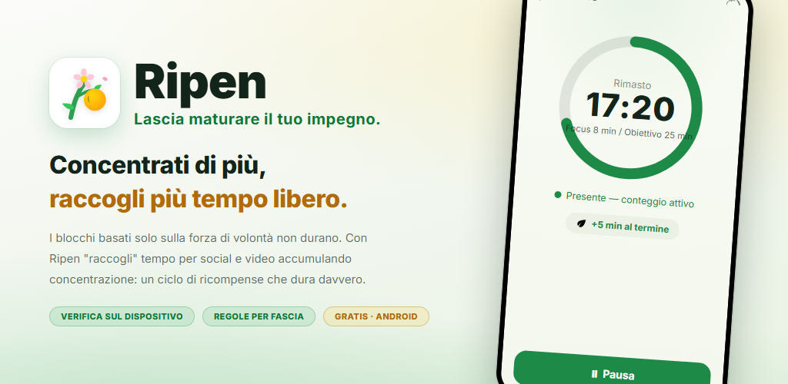
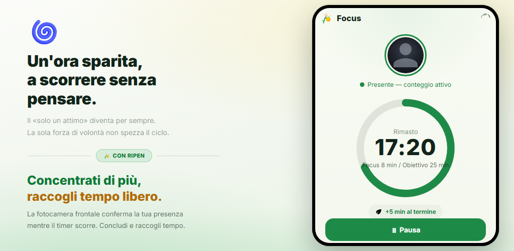
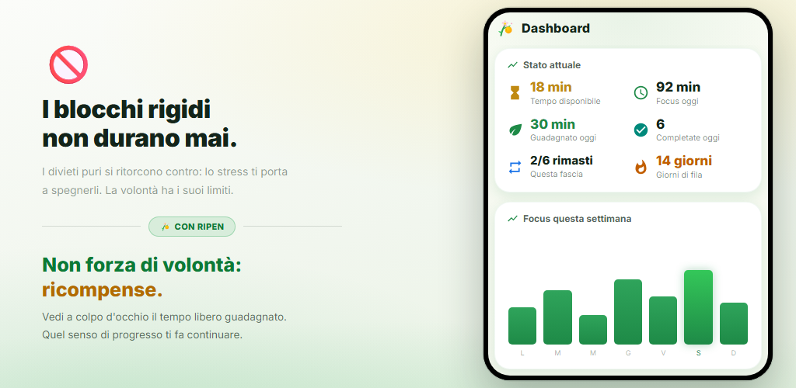
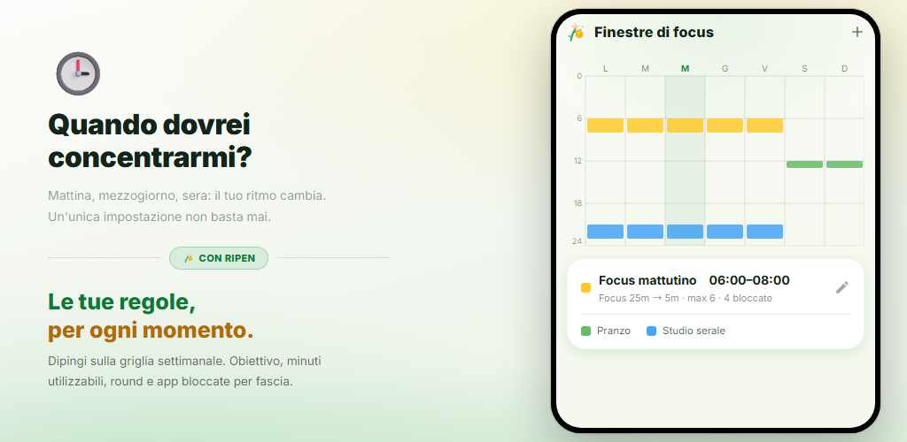
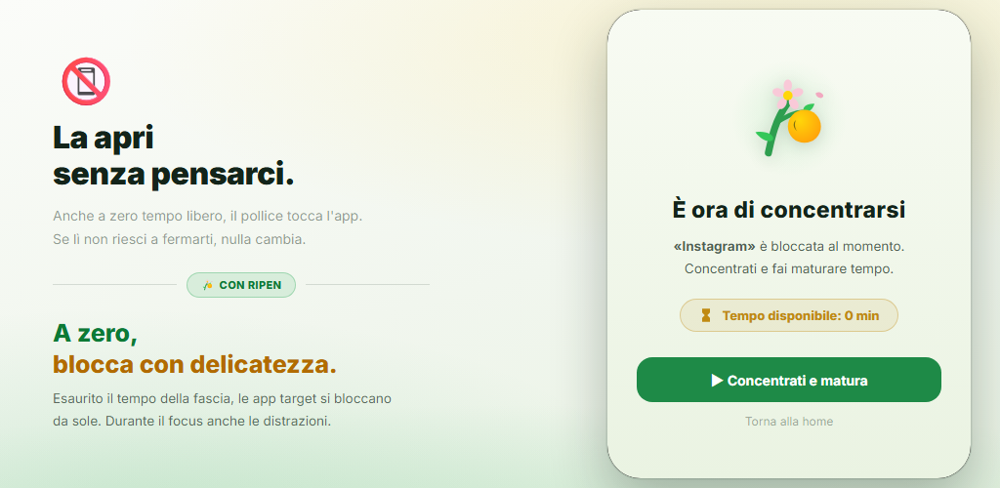
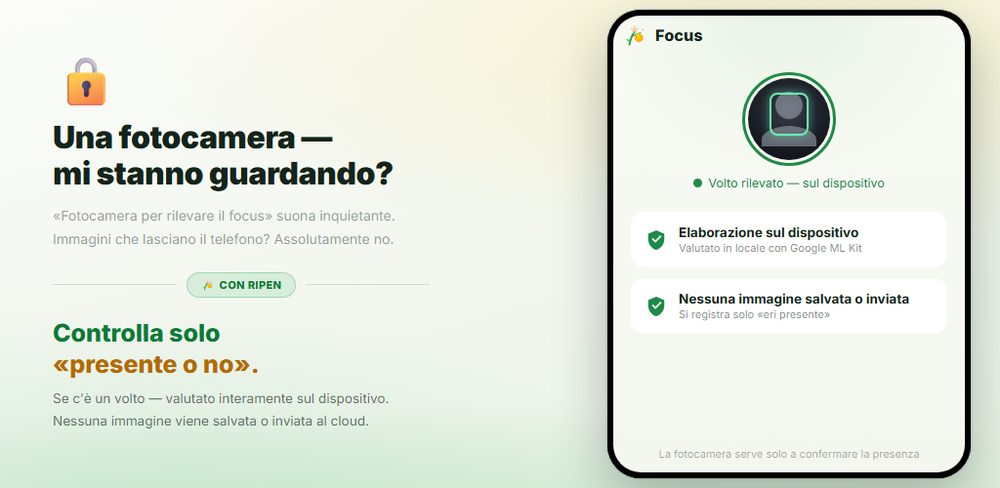

Ciclo di premi
Ogni volta che completi un timer di focus, guadagni tempo per i social e le app video. Sono i premi, non la forza di volontà, a cambiare il tuo comportamento.
I blocca app basati solo sulla forza di volontà non durano. Ripen è un’app di abitudini a premi: più ti concentri e studi, più tempo “raccogli” per i social e le app video. La verifica della presenza con la fotocamera avviene sul tuo dispositivo e puoi disattivarla per ogni fascia oraria.
Android 8.0+ · Gratis · Senza pubblicità · Nessun account

Nessuna configurazione complicata. Decidi solo quando concentrarti, per quanto tempo e quanto tempo ottieni in cambio.
Colora la griglia settimanale per scegliere i giorni e le ore in cui vuoi concentrarti
Con la verifica della presenza attiva, la fotocamera frontale conferma che ci sei mentre il timer scorre
Ogni round completato ti fa guadagnare i minuti che hai impostato (va bene anche un quiz di parole)
A 0 minuti rimasti, le app che hai scelto vengono bloccate con delicatezza
Nelle fasce con la verifica della presenza attiva, il timer di focus avanza solo mentre il tuo viso è davanti allo schermo. Raggiungi l’obiettivo e guadagni i minuti impostati per i social o le app video. I round abbandonati prima della fine non fanno guadagnare nulla.

Vedi a colpo d’occhio tempo disponibile, focus di oggi, guadagnato oggi e giorni di fila. I grafici dell’andamento settimanale e mensile e una mappa di calore per ora rivelano quando ti concentri meglio.

Basta colorare la griglia settimanale per impostare i giorni e le ore in cui vuoi concentrarti. Ogni finestra ha il suo obiettivo di focus, i minuti per round, il limite di round, le app bloccate e la verifica della presenza con la fotocamera. Fuori dalle finestre sei libero.

Quando hai esaurito il tempo di una finestra, aprendo una delle app scelte compare una schermata di blocco. Le app che distraggono vengono bloccate anche durante le sessioni di focus. E il “blocco impostazioni” ti impedisce di allentare le regole in seguito.

Un semplice timer continua a contare anche se ti allontani. Ripen usa la fotocamera frontale solo per capire se c’è un volto davanti allo schermo, e lo fa sul tuo dispositivo. Nessuna immagine viene salvata o inviata. Puoi anche scegliere finestre senza fotocamera.

Guarda come ti concentri, raccogli tempo e vedi le tue app bloccarsi quando è finito.
Ribalta il “vorrei smettere ma non ci riesco”, con i premi.
Ogni volta che completi un timer di focus, guadagni tempo per i social e le app video. Sono i premi, non la forza di volontà, a cambiare il tuo comportamento.
La fotocamera frontale stabilisce solo se sei davanti allo schermo. L’elaborazione avviene sul tuo dispositivo e nessuna immagine viene salvata o inviata. Puoi disattivarla per ogni finestra.
Imposta più finestre per giorno e orario. Ogni finestra ha il suo obiettivo di focus, i suoi minuti, il limite di round e le app bloccate.
Rispondi correttamente a un numero stabilito di quiz di vocabolario inglese (4 opzioni) per guadagnare un round. Circa 10.000 parole per livello CEFR, con test di livello, lista di ripasso e mazzi personali.
Minuti utilizzabili appena inizia una finestra, ancora prima di concentrarti. Si sommano ai premi per il focus.
Una funzione di impegno che ti impedisce di ritoccare le impostazioni per ottenere più svago. Le modifiche che allentano le regole richiedono di programmare uno sblocco e attendere da 1 a 30 giorni.
Andamento del focus, calendario del focus, tasso di completamento, le tue ore migliori per concentrarti e l’andamento dell’uso delle app bloccate: tutto visualizzato.
Senza aprire l’app, una notifica fissa mostra il tempo disponibile, la prossima finestra di focus e il tempo rimanente della sessione. Al termine, un suono e una vibrazione ti avvisano.
Scegli il tema di sistema, chiaro o scuro. L’app è disponibile in 12 lingue, tra cui italiano, inglese e giapponese.
“Una fotocamera per controllare la concentrazione” può sembrare preoccupante. Ripen è progettata mettendo la privacy al primo posto.
Il rilevamento della presenza del volto avviene sul tuo dispositivo con Google ML Kit. Il video non viene mai inviato a un server esterno.
Stabilisce solo se c’è un volto. Foto e video non vengono mai salvati né inviati. Registra soltanto quanti secondi sei stato presente e concentrato.
Le registrazioni del focus e le impostazioni sono salvate sul tuo dispositivo e non vengono mai inviate ai server di Ripen. Se il backup di Android è attivo, le tue impostazioni sono incluse nel backup del tuo account Google e vengono ripristinate quando reinstalli l’app.
Niente registrazione né login, e nessuna pubblicità o strumento di analisi all’interno. Scaricala e inizia subito.
Scaricala da Google Play